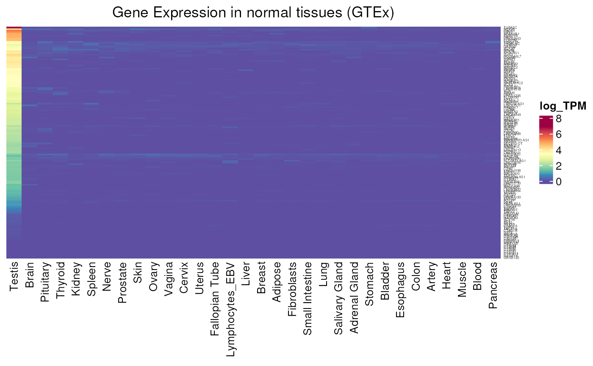
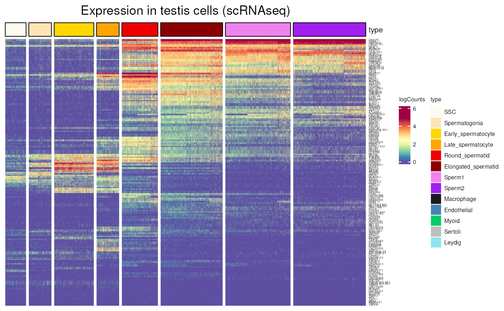
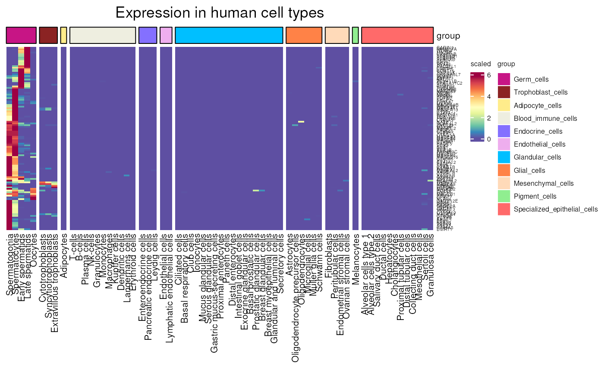
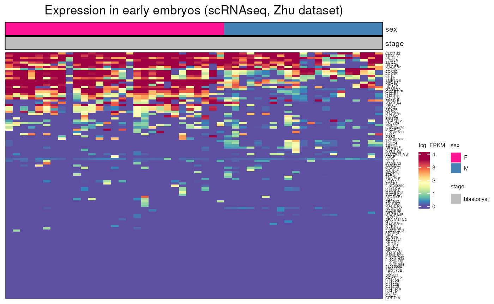
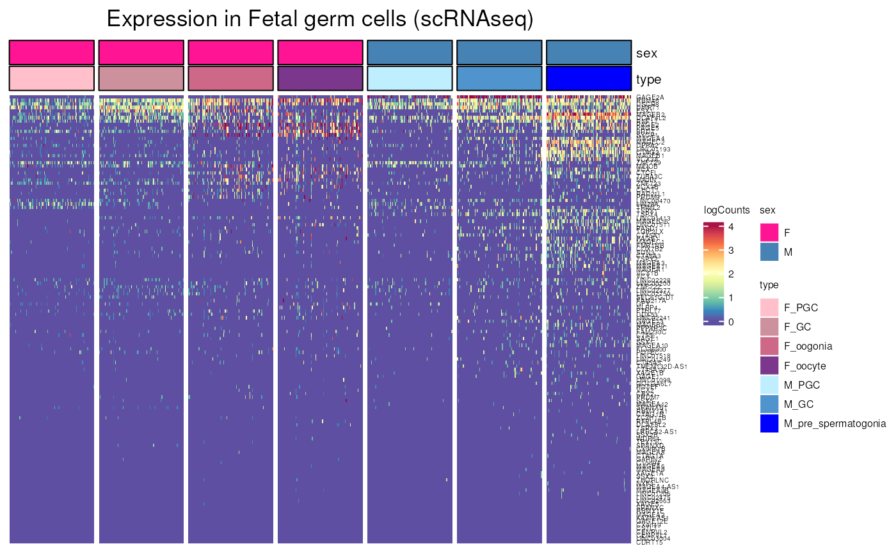
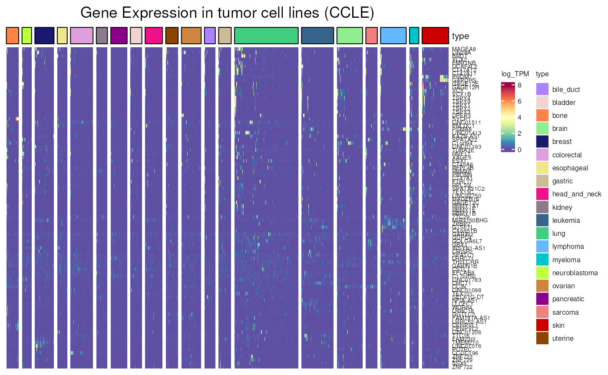
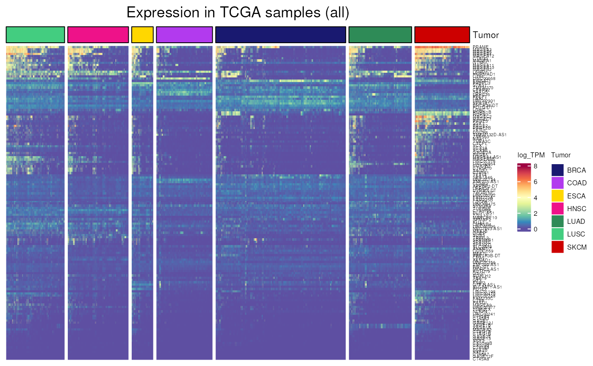
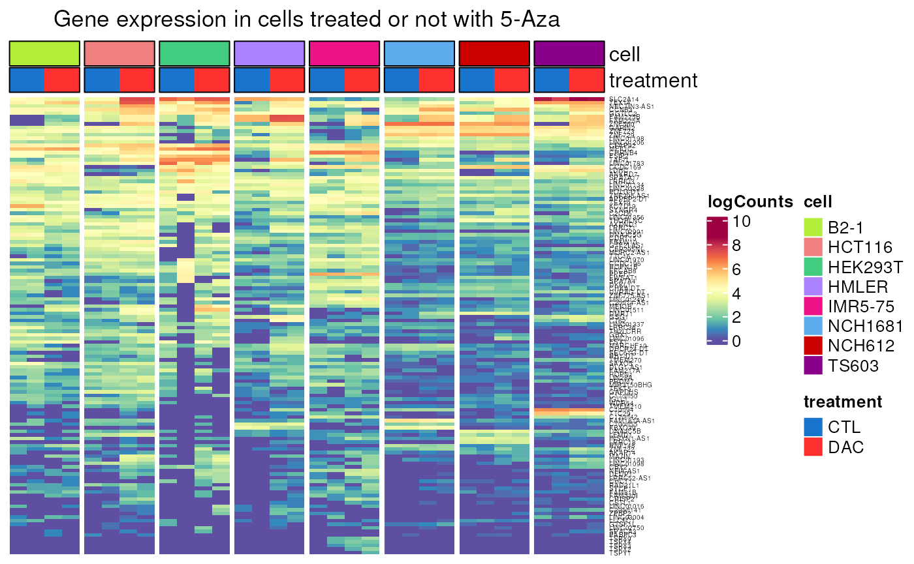

Cancer Testis explorer
Julie Devis, Laurent Gatto, Axelle Loriot
Source:vignettes/CTexploreR.Rmd
CTexploreR.RmdIntroduction
Cancer-Testis (CT) genes, also called Cancer-Germline (CG), are a group of genes whose expression is normally restricted to the germline but that are found aberrantly activated in many types of cancers. These genes produce cancer specific antigens represent ideal targets for anti-cancer vaccines. Besides their interest in immunotherapy, they can also be used as cancer biomarkers and as target of anti-tumor therapies with limited side effect.
Many CT genes use DNA methylation as a primary mechanism of transcriptionnal regulation. This is another interesting point about CT genes as they represent suitable models to study DNA demethylation in cancer.
Currently the reference database gathering CT genes is the CTdatabase that was published in 2009, based on a literature screening(Almeida et al., 2009). This database is however not up to date. Recently identified CT genes are not referenced (in particular CT genes identified by omics methods that didn’t exist at the time) while some genes referred as CT genes appeared to be in reality expressed in many somatic tissues. Furthermore, the database is not in an easily importable format, some genes are not encoded properly (by synonyms names rather than by their official HGNC symbol names, or by a concatenation of both) resulting in poor interoperability for downstream analyses. More recent studies proposed other lists of CT genes like Wang’s CTatlas (Wang et al., 2016, Jamin et al., 2021, Carter et al., 2023). These lists were established using different criteria to define CT genes and hence differ substantially from each other. Moreover, these lists are usually provided as supplemental data files and are not strictly speaking databases. Finally, none of these studies describe the involvement of DNA methylation in the regulation of individual CT genes.
We therefore created CTexploreR, a Bioconductor R
package, aimed to redefine rigorously the list of CT genes based on
publicly available RNAseq databases and to summarize their main
characteristics. We included methylation analyses to classify these
genes according to whether they are regulated or not by DNA methylation.
The package also offers tools to visualize CT genes expression and
promoter DNA methylation in normal and tumoral tissues. CTexploreR hence
represents an up-to-date reference database for CT genes and can be used
as a starting point for further investigations related to these
genes.
Installation
To install the package:
if (!require("BiocManager")) {
install.packages("BiocManager")
}
BiocManager::install("CTexploreR")To install the package from GitHub:
if (!require("BiocManager")) {
install.packages("BiocManager")
}
BiocManager::install("UCLouvain-CBIO/CTexploreR")CT genes
The central element of CTexploreR is the list of 280 CT
and CTP genes (see table below) selected based on their expression in
normal and tumoral tissues (selection details in the next section). The
table also summarises their main characteristics.
## Loading required package: CTdata
head(CT_genes, 10)## # A tibble: 10 × 47
## ensembl_gene_id external_gene_name CT_gene_type testis_specificity
## <chr> <chr> <chr> <chr>
## 1 ENSG00000234593 KAZN-AS1 CT_gene testis_specific
## 2 ENSG00000131914 LIN28A CT_gene testis_specific
## 3 ENSG00000142698 C1orf94 CT_gene testis_specific
## 4 ENSG00000237853 NFIA-AS1 CT_gene testis_specific
## 5 ENSG00000137948 BRDT CT_gene testis_specific
## 6 ENSG00000198765 SYCP1 CT_gene testis_specific
## 7 ENSG00000237463 LRRC52-AS1 CT_gene testis_specific
## 8 ENSG00000215817 ZC3H11B CT_gene testis_specific
## 9 ENSG00000162843 WDR64 CT_gene testis_specific
## 10 ENSG00000231532 LINC01249 CT_gene testis_specific
## # ℹ 43 more variables: regulated_by_methylation <lgl>, X_linked <lgl>,
## # chr <chr>, strand <int>, transcript_start <int>, transcript_end <int>,
## # transcription_start_site <int>, GTEX_category <chr>, q75_TPM_somatic <dbl>,
## # max_TPM_somatic <dbl>, ratio_testis_somatic <dbl>, TPM_testis <dbl>,
## # lowly_expressed_in_GTEX <lgl>, multimapping_analysis <chr>,
## # HPA_scRNAseq_celltype_specific_nTPM <chr>, max_HPA_somatic <dbl>,
## # max_HPA_germcell <dbl>, not_detected_in_somatic_HPA <lgl>, …CTdata is the companion Package for
CTexploreR and provides the omics data that was necessary
to select and characterize cancer testis genes as well as exploring
them. The data are served through the ExperimentHub
infrastructure. Currently available data are summarised in the table
below and details can be found in CTdata vignette or
manuals.
CTdata()## Title
## 1 GTEX_data
## 2 CCLE_data
## 3 normal_tissues_multimapping_data
## 4 DAC_treated_cells
## 5 DAC_treated_cells_multimapping
## 6 TCGA_TPM
## 7 CT_methylation_in_tissues
## 8 CT_mean_methylation_in_tissues
## 9 TCGA_CT_methylation
## 10 CT_genes
## 11 CCLE_correlation_matrix
## 12 testis_sce
## 13 scRNAseq_HPA
## 14 all_genes
## 15 FGC_sce
## 16 HPA_cell_type_specificities
## 17 mean_methylation_in_tissues
## 18 methylation_in_tissues
## 19 oocytes_sce
## 20 TCGA_methylation
## 21 embryo_sce_Zhu
## 22 embryo_sce_Petropoulos
## 23 hESC_data
## 24 methylation_in_hESC
## 25 mean_methylation_in_hESC
## 26 methylation_in_FGC
## 27 mean_methylation_in_FGC
## 28 methylation_in_embryo
## 29 mean_methylation_in_embryo
## Description
## 1 Gene expression data in normal tissues from GTEx database
## 2 Gene expression data in cancer cell lines from CCLE
## 3 Gene expression values in normal tissues with or without allowing multimapping
## 4 Gene expression values in a set of cell lines treated or not with 5-Aza-2'-Deoxycytidine (DAC), a demethylating agent
## 5 Gene expression values (multimapping allowed) in a set of cell lines treated or not with 5-Aza-2'-Deoxycytidine (DAC)
## 6 Gene expression data in TCGA samples
## 7 Methylation values of CpGs located within Cancer-Testis promoters in a set of normal tissues
## 8 Mean methylation values of all CpGs located within Cancer-Testis (CT) promoters in a set of normal tissues
## 9 Methylation of CT promoters in TCGA samples
## 10 Cancer-Testis (CT) genes description
## 11 Gene correlations in CCLE cancer cell lines
## 12 Testis scRNAseq data
## 13 Gene expression profiles in different human cell types based on scRNAseq data from The Human Protein Atlas
## 14 All genes description, according to the analysis done for CT genes
## 15 Fetal gonad scRNAseq
## 16 Cell type specificities (from HPA)
## 17 Mean methylation values of all CpGs located within all (CT) promoters in a set of normal tissues
## 18 Methylation values of CpGs located within all promoters in a set of normal tissues
## 19 Oocytes scRNAseq
## 20 Methylation of all genes promoters in TCGA samples
## 21 Gene expression values in early embryo (blastocyst)
## 22 Gene expression values in early embryo (blastocyst and Morula)
## 23 Gene expression data in human embryonic stem cells
## 24 Methylation values of CpGs located within all promoters in human embryonic stem cells
## 25 Mean methylation values of all CpGs located within all promoters in human embryonic stem cells
## 26 Methylation values of CpGs located within all promoters in fetal germ cells
## 27 Mean methylation values of all CpGs located within all promoters in fetal germ cells
## 28 Methylation values of CpGs located within all promoters in early embryo
## 29 Mean methylation values of all CpGs located within all promoters in early embryo
## BiocVersion Genome SourceType
## 1 3.19 hg38 tab
## 2 3.19 hg38 CSV
## 3 3.19 hg38 FASTQ
## 4 3.19 hg38 FASTQ
## 5 3.19 hg38 FASTQ
## 6 3.19 hg38 TSV
## 7 3.17 hg38 BED
## 8 3.17 hg38 BED
## 9 3.17 hg38 TXT
## 10 3.19 hg38 TSV
## 11 3.19 hg38 CSV
## 12 3.19 hg38 FASTQ
## 13 3.19 hg38 TSV
## 14 3.19 hg38 TSV
## 15 3.19 hg38 RDS
## 16 3.19 hg38 TSV
## 17 3.19 hg38 BED
## 18 3.19 hg38 BED
## 19 3.19 hg38 TXT
## 20 3.19 hg38 TSV
## 21 3.19 hg38 tab
## 22 3.19 hg38 TXT
## 23 3.19 hg38 FASTQ
## 24 3.19 hg38 BED
## 25 3.19 hg38 BED
## 26 3.19 hg19 TXT
## 27 3.19 hg19 TXT
## 28 3.19 hg19 BED
## 29 3.19 hg19 BED
## SourceUrl
## 1 https://storage.googleapis.com/gtex_analysis_v8/rna_seq_data/GTEx_Analysis_2017-06-05_v8_RNASeQCv1.1.9_gene_median_tpm.gct.gz
## 2 https://ndownloader.figshare.com/files/34989922, https://ndownloader.figshare.com/files/35020903
## 3 https://www.encodeproject.org/
## 4 https://www.encodeproject.org/
## 5 https://www.encodeproject.org/
## 6 https://portal.gdc.cancer.gov/
## 7 https://www.encodeproject.org/
## 8 https://www.encodeproject.org/
## 9 https://portal.gdc.cancer.gov/
## 10 https://zenodo.org/record/7537824/files/cancermine_collated.tsv?download=1
## 11 https://ndownloader.figshare.com/files/34989922, https://ndownloader.figshare.com/files/35020903
## 12 https://www.ncbi.nlm.nih.gov/geo/query/acc.cgi?acc=GSE120508
## 13 https://www.proteinatlas.org/download/rna_single_cell_type.tsv.zip
## 14 https://zenodo.org/record/7537824/files/cancermine_collated.tsv?download=1
## 15 https://cellxgene.cziscience.com/collections/661a402a-2a5a-4c71-9b05-b346c57bc451Data
## 16 https://www.proteinatlas.org/
## 17 https://www.encodeproject.org/
## 18 https://www.encodeproject.org/
## 19 https://www.ncbi.nlm.nih.gov/geo/query/acc.cgi?acc=GSE154762
## 20 https://portal.gdc.cancer.gov/
## 21 https://www.ncbi.nlm.nih.gov/geo/query/acc.cgi?acc=GSE81233
## 22 https://www.ebi.ac.uk/biostudies/files/E-MTAB-3929/
## 23 https://www.encodeproject.org/
## 24 https://www.encodeproject.org/
## 25 https://www.encodeproject.org/
## 26 https://www.ncbi.nlm.nih.gov/geo/query/acc.cgi?acc=GSE107714
## 27 https://www.ncbi.nlm.nih.gov/geo/query/acc.cgi?acc=GSE107714
## 28 https://www.ncbi.nlm.nih.gov/geo/query/acc.cgi?acc=GSE81233
## 29 https://www.ncbi.nlm.nih.gov/geo/query/acc.cgi?acc=GSE81233
## SourceVersion Species TaxonomyId Coordinate_1_based
## 1 8 Homo sapiens 9606 TRUE
## 2 22Q2 Homo sapiens 9606 TRUE
## 3 5 Homo sapiens 9606 TRUE
## 4 5 Homo sapiens 9606 TRUE
## 5 5 Homo sapiens 9606 TRUE
## 6 36.0 Homo sapiens 9606 TRUE
## 7 5 Homo sapiens 9606 TRUE
## 8 5 Homo sapiens 9606 TRUE
## 9 36.0 Homo sapiens 9606 TRUE
## 10 49 Homo sapiens 9606 TRUE
## 11 22Q2 Homo sapiens 9606 TRUE
## 12 1 Homo sapiens 9606 TRUE
## 13 1 Homo sapiens 9606 TRUE
## 14 49 Homo sapiens 9606 TRUE
## 15 1 Homo sapiens 9606 TRUE
## 16 23 Homo sapiens 9606 TRUE
## 17 5 Homo sapiens 9606 TRUE
## 18 5 Homo sapiens 9606 TRUE
## 19 1 Homo sapiens 9606 TRUE
## 20 36.0 Homo sapiens 9606 TRUE
## 21 1 Homo sapiens 9606 TRUE
## 22 1 Homo sapiens 9606 TRUE
## 23 5 Homo sapiens 9606 TRUE
## 24 5 Homo sapiens 9606 TRUE
## 25 5 Homo sapiens 9606 TRUE
## 26 1 Homo sapiens 9606 TRUE
## 27 1 Homo sapiens 9606 TRUE
## 28 1 Homo sapiens 9606 TRUE
## 29 1 Homo sapiens 9606 TRUE
## DataProvider
## 1 The Genotype-Tissue Expression
## 2 Cancer Cell Line Encyclopedia
## 3 ENCODE Project
## 4 ENCODE Project
## 5 ENCODE Project
## 6 The Cancer Genome Atlas
## 7 ENCODE Project
## 8 ENCODE Project
## 9 The Cancer Genome Atlas
## 10 CancerMine
## 11 Cancer Cell Line Encyclopedia
## 12 The adult human testis transcriptional cell atlas, Guo et al. 2018
## 13 The Human Protein Atlas
## 14 CancerMine
## 15 Single-cell roadmap of human gonadal development (Garcia-Alonso, Nature 2022)
## 16 The Human Protein Atlas
## 17 ENCODE Project
## 18 ENCODE Project
## 19 NCBI GEO : Decoding dynamic epigenetic landscapes in human oocytes\n using single-cell multi-omics sequencing (Yan et al. Cell Stem Cell 2021)
## 20 The Cancer Genome Atlas
## 21 Single Cell DNA Methylome Sequencing of Human Preimplantation Embryos (Zhu et al. 2018)
## 22 Single-Cell RNA-Seq Reveals Lineage and X Chromosome Dynamics in\n Human Preimplantation Embryos (Petropulous et al, 2014)
## 23 ENCODE Project
## 24 ENCODE Project
## 25 ENCODE Project
## 26 Data from Dissecting the epigenomic dynamics of human fetal germ cell\n development at single-cell resolution (Li et al. 2021)
## 27 Data from Dissecting the epigenomic dynamics of human fetal germ cell\n development at single-cell resolution (Li et al. 2021)
## 28 Single Cell DNA Methylome Sequencing of Human Preimplantation Embryos (Zhu et al. 2018)
## 29 Single Cell DNA Methylome Sequencing of Human Preimplantation Embryos (Zhu et al. 2018)
## Maintainer RDataClass
## 1 Axelle Loriot <axelle.loriot@uclouvain.be> SummarizedExperiment
## 2 Axelle Loriot <axelle.loriot@uclouvain.be> SummarizedExperiment
## 3 Axelle Loriot <axelle.loriot@uclouvain.be> SummarizedExperiment
## 4 Axelle Loriot <axelle.loriot@uclouvain.be> SummarizedExperiment
## 5 Axelle Loriot <axelle.loriot@uclouvain.be> SummarizedExperiment
## 6 Axelle Loriot <axelle.loriot@uclouvain.be> SummarizedExperiment
## 7 Axelle Loriot <axelle.loriot@uclouvain.be> RangedSummarizedExperiment
## 8 Axelle Loriot <axelle.loriot@uclouvain.be> SummarizedExperiment
## 9 Axelle Loriot <axelle.loriot@uclouvain.be> RangedSummarizedExperiment
## 10 Axelle Loriot <axelle.loriot@uclouvain.be> tibble
## 11 Axelle Loriot <axelle.loriot@uclouvain.be> matrix
## 12 Axelle Loriot <axelle.loriot@uclouvain.be> SingleCellExperiment
## 13 Axelle Loriot <axelle.loriot@uclouvain.be> SingleCellExperiment
## 14 Axelle Loriot <axelle.loriot@uclouvain.be> tibble
## 15 Axelle Loriot <axelle.loriot@uclouvain.be> SingleCellExperiment
## 16 Axelle Loriot <axelle.loriot@uclouvain.be> SingleCellExperiment
## 17 Axelle Loriot <axelle.loriot@uclouvain.be> SummarizedExperiment
## 18 Axelle Loriot <axelle.loriot@uclouvain.be> RangedSummarizedExperiment
## 19 Axelle Loriot <axelle.loriot@uclouvain.be> SingleCellExperiment
## 20 Axelle Loriot <axelle.loriot@uclouvain.be> SummarizedExperiment
## 21 Axelle Loriot <axelle.loriot@uclouvain.be> SingleCellExperiment
## 22 Axelle Loriot <axelle.loriot@uclouvain.be> SingleCellExperiment
## 23 Axelle Loriot <axelle.loriot@uclouvain.be> SummarizedExperiment
## 24 Axelle Loriot <axelle.loriot@uclouvain.be> RangedSummarizedExperiment
## 25 Axelle Loriot <axelle.loriot@uclouvain.be> SummarizedExperiment
## 26 Axelle Loriot <axelle.loriot@uclouvain.be> RangedSummarizedExperiment
## 27 Axelle Loriot <axelle.loriot@uclouvain.be> RangedSummarizedExperiment
## 28 Axelle Loriot <axelle.loriot@uclouvain.be> RangedSummarizedExperiment
## 29 Axelle Loriot <axelle.loriot@uclouvain.be> RangedSummarizedExperiment
## DispatchClass RDataPath
## 1 Rda CTdata/eh_data/v2/GTEX_data.rda
## 2 Rda CTdata/eh_data/v2/CCLE_data.rda
## 3 Rda CTdata/eh_data/v2/normal_tissues_multimapping_data.rda
## 4 Rda CTdata/eh_data/v2/DAC_treated_cells.rda
## 5 Rda CTdata/eh_data/v2/DAC_treated_cells_multimapping.rda
## 6 Rda CTdata/eh_data/v2/TCGA_TPM.rda
## 7 Rda CTdata/eh_data/v2/CT_methylation_in_tissues.rda
## 8 Rda CTdata/eh_data/v2/CT_mean_methylation_in_tissues.rda
## 9 Rda CTdata/eh_data/v2/TCGA_CT_methylation.rda
## 10 Rda CTdata/eh_data/v3/CT_genes.rda
## 11 Rda CTdata/eh_data/v3/CCLE_correlation_matrix.rda
## 12 Rda CTdata/eh_data/v2/testis_sce.rda
## 13 Rda CTdata/eh_data/v2/scRNAseq_HPA.rda
## 14 Rda CTdata/eh_data/all_genes.rda
## 15 Rda CTdata/eh_data/FGC_sce.rda
## 16 Rda CTdata/eh_data/HPA_cell_type_specificities.rda
## 17 Rda CTdata/eh_data/mean_methylation_in_tissues.rda
## 18 Rda CTdata/eh_data/methylation_in_tissues.rda
## 19 Rda CTdata/eh_data/oocytes_sce.rda
## 20 Rda CTdata/eh_data/TCGA_methylation.rda
## 21 Rda CTdata/eh_data/embryo_sce_Zhu.rda
## 22 Rda CTdata/eh_data/embryo_sce_Petropoulos.rda
## 23 Rda CTdata/eh_data/hESC_data.rda
## 24 Rda CTdata/eh_data/methylation_in_hESC.rda
## 25 Rda CTdata/eh_data/mean_methylation_in_hESC.rda
## 26 Rda CTdata/eh_data/methylation_in_FGC.rda
## 27 Rda CTdata/eh_data/mean_methylation_in_FGC.rda
## 28 Rda CTdata/eh_data/methylation_in_embryo.rda
## 29 Rda CTdata/eh_data/mean_methylation_in_embryo.rda
## Tags
## 1 ExperimentHub:ExperimentData:ReproducibleResearch:RepositoryData:Homo_sapiens_Data:GeneExpression:NormalTissues
## 2 ExperimentHub:ExperimentData:ReproducibleResearch:RepositoryData:Homo_sapiens_Data:GeneExpression:CancerData:CellLines
## 3 ExperimentHub:ExperimentData:ReproducibleResearch:RepositoryData:Homo_sapiens_Data:GeneExpression:NormalTissues:Multimapping
## 4 ExperimentHub:ExperimentData:ReproducibleResearch:RepositoryData:Homo_sapiens_Data:GeneExpression:CellLines:DemethylatingAgent
## 5 ExperimentHub:ExperimentData:ReproducibleResearch:RepositoryData:Homo_sapiens_Data:GeneExpression:CellLines:DemethylatingAgent:Multimapping
## 6 ExperimentHub:ExperimentData:ReproducibleResearch:RepositoryData:Homo_sapiens_Data:GeneExpression:CancerData:TumorSamples
## 7 ExperimentHub:ExperimentData:ReproducibleResearch:RepositoryData:Homo_sapiens_Data:MethylationData:CancerTestis:NormalTissues
## 8 ExperimentHub:ExperimentData:ReproducibleResearch:RepositoryData:Homo_sapiens_Data:MethylationData:CancerTestis:NormalTissues
## 9 ExperimentHub:ExperimentData:ReproducibleResearch:RepositoryData:Homo_sapiens_Data:MethylationData:CancerTestis:CancerData:TumorSamples
## 10 ExperimentHub:ExperimentData:ReproducibleResearch:RepositoryData:Homo_sapiens_Data:CancerTestis:MethylationData:GeneExpression:CancerData:NormalTissues:TumorSamples
## 11 ExperimentHub:ExperimentData:ReproducibleResearch:RepositoryData:Homo_sapiens_Data:CancerTestis:GeneExpression:CancerData:CellLines
## 12 ExperimentHub:ExperimentData:ReproducibleResearch:RepositoryData:Homo_sapiens_Data:GeneExpression:scRNAseq:testis
## 13 ExperimentHub:ExperimentData:ReproducibleResearch:RepositoryData:Homo_sapiens_Data:GeneExpression:scRNAseq:normalCellTypes
## 14 ExperimentHub:ExperimentData:ReproducibleResearch:RepositoryData:Homo_sapiens_Data:MethylationData:GeneExpression:CancerData:NormalTissues:TumorSamples
## 15 ExperimentHub:ExperimentData:ReproducibleResearch:RepositoryData:Homo_sapiens_Data:GeneExpression:scRNAseq:FetalCells:Gonad
## 16 ExperimentHub:ExperimentData:ReproducibleResearch:RepositoryData:Homo_sapiens_Data:GeneActivation:scRNAseq:testis:normalCellTypes
## 17 ExperimentHub:ExperimentData:ReproducibleResearch:RepositoryData:Homo_sapiens_Data:MethylationData:NormalTissues
## 18 ExperimentHub:ExperimentData:ReproducibleResearch:RepositoryData:Homo_sapiens_Data:MethylationData:NormalTissues
## 19 ExperimentHub:ExperimentData:ReproducibleResearch:RepositoryData:Homo_sapiens_Data:GeneExpression:scRNAseq:Oocyts:Gonad
## 20 ExperimentHub:ExperimentData:ReproducibleResearch:RepositoryData:Homo_sapiens_Data:GeneExpression:CancerData:TumorSamples
## 21 ExperimentHub:ExperimentData:ReproducibleResearch:RepositoryData:Homo_sapiens_Data:GeneExpression:scRNAseq:embryo
## 22 ExperimentHub:ExperimentData:ReproducibleResearch:RepositoryData:Homo_sapiens_Data:GeneExpression:scRNAseq:embryo
## 23 ExperimentHub:ExperimentData:ReproducibleResearch:RepositoryData:Homo_sapiens_Data:GeneExpression:hESC
## 24 ExperimentHub:ExperimentData:ReproducibleResearch:RepositoryData:Homo_sapiens_Data:MethylationData:hESC
## 25 ExperimentHub:ExperimentData:ReproducibleResearch:RepositoryData:Homo_sapiens_Data:MethylationData:hESC
## 26 ExperimentHub:ExperimentData:ReproducibleResearch:RepositoryData:Homo_sapiens_Data:MethylationData:FetalGermCells
## 27 ExperimentHub:ExperimentData:ReproducibleResearch:RepositoryData:Homo_sapiens_Data:MethylationData:FetalGermCells
## 28 ExperimentHub:ExperimentData:ReproducibleResearch:RepositoryData:Homo_sapiens_Data:MethylationData:embryo
## 29 ExperimentHub:ExperimentData:ReproducibleResearch:RepositoryData:Homo_sapiens_Data:MethylationData:embryoCT gene selection
In order to generate the list of CT genes, we followed a specific selection procedure (see figure below).

Testis-specific expression
Testis-specific genes (expressed exclusively in testis) and testis-preferential genes (expressed in a few somatic tissues at a level lower than 10x testis expression) were first selected using the GTEx database (Aguet et al., 2020).
Note that some genes were undetectable in the GTEx database due to
multimapping issues (these were flagged as “lowly expressed” in
GTEX_category column). A careful inspection of these genes
showed that many of them are well-known Cancer-Testis genes, belonging
to gene families (MAGEA, SSX, CT45A, GAGE, …) from which members have
identical or nearly identical sequences. This is likely the reason why
these genes are not detected in the GTEx database, as GTEx processing
pipeline specifies that overlapping intervals between genes are excluded
from all genes for counting.For these genes, as testis-specificity could
not be assessed using GTEx database, RNAseq data from a set of normal
tissues were reprocessed in order to allow multimapping. Expression of
several genes became detectable in some tissues. Genes showing a
testis-specific expression (expression at least 10x higher in testis
than in any somatic tissues when multimapping was allowed) were
selected, and flagged as testis-specific in
multimapping_analysis column.
Additionally, as our selection procedure is based on bulk RNAseq data, we wanted to ensure that the selected genes are not expressed in rare populations of somatic cells. We used the Single Cell Type Atlas classification from the Human Protein Atlas (Uhlén et al., 2015) to exclude the ones that were flagged as specific of any somatic cell type.
Activation in cancer cell lines and TCGA tumors
To assess activation in cancers, RNAseq data from cancer cell lines from CCLE (Barretina et al., 2012) and from TCGA cancer samples (Cancer Genome Atlas Research Network et al., 2013) were used. This allowed to select among testis-specific and testis-preferential genes those that are activated in cancers.
In the CCLE_category and TCGA_category
columns, genes are tagged as “activated” when they are highly expressed
in at one percent of cancer cell line/sample (TPM >= 1). However
genes that were found to be expressed in all -or almost all-cancer cell
lines/samples were removed, as this probably reflects a constitutive
expression rather than a true activation. We filtered out genes that
were not completely repressed in at least 20 % of cancer cell
lines/samples (TPM <= 0.5). We also made use of the normal
peritumoral samples available in TCGA data to remove from our selection
genes that were already detected in a significant fraction of these
cells.
IGV visualisation
All selected CT genes were visualised on IGV (Thorvaldsdóttir et al.,
2013) using a RNA-seq alignment from testis, to ensure that expression
in testis really corresponded to the canonical transcript. The aim was
initially to identify precisely the transcription start site of each
gene, but unexpectedly we observed that for some genes, the reads were
not properly aligned on exons, but were instead spread across a wide
genomic region spanning the genes. These genes, flagged as “unclear” in
IGV_backbone column, were removed from the CT_gene
category, as their expression values in GTEX, TCGA and CCLE might
reflect a poorly defined transcription in these regions and are hence
likely unreliable.
Regulation by methylation
Genes flagged as TRUE in
regulated_by_methylation column correspond to
Genes that are significantly induced by a demethylating agent (RNAseq analysis of cell lines reated with DAC (5-Aza-2′-Deoxycytidine)).
Genes that have a highly methylated promoter in normal somatic tissues (WGBS analysis of a set of normal tissues).
For some genes showing a strong activation in cells treated with 5-Aza-2′-Deoxycytidine, methylation analysis was not possible due to multimapping issues. In this case, genes were still considered as regulated by methylation unless their promoter appeared unmethylated in somatic tissues or methylated in germ cells.
Available functions
For details about functions, see their respective manual pages. For
all functions, an option values_only can be set to
TRUE in order to get the values instead of the
visualisation.
All visualisation functions can be used on all GTEx genes, not only on Cancer-Testis genes, as the data they refer to contains all genes.
Expression in normal healthy tissues
GTEX_expression()
Allows to visualise gene expression in GTEx tissues. We can for example see the difference of expression between testis-specific and testis-preferential genes. Testis-specific genes have been determined with a stricter specificity to the testis : they are lowly expressed in all somatic tissues and at least 10 times more in the testis. Whereas testis-preferential accepts a little expression outside the testis : they are lowly expressed in at least 75% of somatic tissues, but still 10 times more in the testis.
- Applied to testis-specific genes : we can clearly see the expression strictly limited to the testis. We can also see genes that are lowly expressed in GTEx, and have thus been characterized using multimapping (see below).
testis_specific <- dplyr::filter(
CT_genes,
CT_gene_type == "CT_gene")
GTEX_expression(testis_specific$external_gene_name, units = "log_TPM")## see ?CTdata and browseVignettes('CTdata') for documentation## loading from cache
- Applied to testis-preferential genes : we can see that the expression is less stringent to testis, as expected, with low expression in some other tissues, always with a strong testis signal.
testis_preferential <- dplyr::filter(
CT_genes, CT_gene_type == "CTP_gene")
GTEX_expression(testis_preferential$external_gene_name, units = "log_TPM")## see ?CTdata and browseVignettes('CTdata') for documentation## loading from cache
normal_tissue_expression_multimapping()
Allows to visualise the expression values obtained by counting or not multi-mapped reads in normal tissues. We can apply that to genes that are lowly expressed in GTEx (as seen above) in order to visualise their expression. First heatmap shows expression without multimapping while multimapping was allowed in the second one, where expression can be observed. This allowed their determination as testis-specific genes.
testis_specific_in_multimapping_analysis <-
dplyr::filter(CT_genes, lowly_expressed_in_GTEX)
normal_tissue_expression_multimapping(
testis_specific_in_multimapping_analysis$external_gene_name,
multimapping = FALSE, units = "log_TPM")## see ?CTdata and browseVignettes('CTdata') for documentation## loading from cache
normal_tissue_expression_multimapping(
testis_specific_in_multimapping_analysis$external_gene_name,
multimapping = TRUE, units = "log_TPM")## see ?CTdata and browseVignettes('CTdata') for documentation
## loading from cache
testis_expression()
Allows to visualise gene expression in all different testis cell type, somatic or germ, using data from the adult human testis transcriptional cell atlas.
Using the testis cell type defined for each CT genes, we visualise clearly that genes mainly expressed in an early stage of spermatogenesis aren’t expressed later and vice-versa.
X_CT <-
dplyr::filter(CT_genes, X_linked)
testis_expression(X_CT$external_gene_name,
cells = "germ_cells")## see ?CTdata and browseVignettes('CTdata') for documentation## loading from cache## Warning: 12 out of 82 names invalid: PPP4R3C, CENPVL2, CENPVL1, CT47A1, CT45A6,
## CT45A7, CT45A8, CT45A9, MAGEA4-AS1, MAGEA2, GAGE2E, GAGE12C.
## See the manual page for valid types.## `use_raster` is automatically set to TRUE for a matrix with more than
## 2000 columns You can control `use_raster` argument by explicitly
## setting TRUE/FALSE to it.
##
## Set `ht_opt$message = FALSE` to turn off this message.
notX_CT <-
dplyr::filter(CT_genes, !X_linked)
testis_expression(notX_CT$external_gene_name,
cells = "germ_cells")## see ?CTdata and browseVignettes('CTdata') for documentation
## loading from cache## Warning: 38 out of 198 names invalid: KAZN-AS1, NFIA-AS1, LRRC52-AS1, ZC3H11B,
## THORLNC, LINC02377, SLC7A11-AS1, LINC02241, LINC02228, LINC03004,
## SEC61G-DT, ZNF722, GTF2I-AS1, SPATA31C2, TEX48, LINC02663, LINC02750,
## FAM230C, GOLGA6L7, LINC02864, ZNF723, VCY, VCY1B, RBMY1B, LINC01783,
## DHCR24-DT, LINC03102, C2orf74-AS1, ZNF775-AS1, MIR3150BHG, CHKA-DT,
## UVRAG-DT, CCDC196, POLG-DT, APPBP2-DT, LINC01970, TUBB8B, FAM230I.
## See the manual page for valid types.## `use_raster` is automatically set to TRUE for a matrix with more than
## 2000 columns You can control `use_raster` argument by explicitly
## setting TRUE/FALSE to it.
##
## Set `ht_opt$message = FALSE` to turn off this message.
HPA_cell_type_expression()
Allows to visualise gene expression in all different healthy cell type, comparing different somatic cells to germ cells, using data from the human proteome atlas.
Visualising all CT_genes, the specificity to germ cells only is quite clear.
HPA_cell_type_expression(units = "scaled")## see ?CTdata and browseVignettes('CTdata') for documentation## loading from cache## Warning: 29 out of 146 names invalid: KAZN-AS1, NFIA-AS1, LRRC52-AS1, LINC01249,
## THORLNC, LINC01206, LINC02475, LINC02377, SLC7A11-AS1, LINC01098,
## LINC01511, LINC02241, LINC02228, LINC03004, SEC61G-DT, GTF2I-AS1,
## LINC00200, LINC02663, LINC01518, LINC02750, TMEM132D-AS1, FAM230C,
## LINC01193, LINC01413, FLJ36000, LINC00470, LINC02864, DSCR8,
## MAGEA4-AS1.
## See the manual page for valid types.
Expression in cancer cells and samples
CCLE_expression()
Allows to visualise gene expression in different histological types of CCLE cancer cell lines. We can thus compare genes that are or not activated in tumoral cell lines.
- Applied to CT genes frequently activated in CCLE cell lines, more than 5% of CCLE cell_lines are expressing each gene. A string signal is visible.
frequently_activated <- dplyr::filter(
CT_genes,
percent_of_positive_CCLE_cell_lines >= 5)
CCLE_expression(
genes = frequently_activated$external_gene_name,
type = c(
"lung", "skin", "bile_duct", "bladder", "colorectal",
"lymphoma", "uterine", "myeloma", "kidney",
"pancreatic", "brain", "gastric", "breast", "bone",
"head_and_neck", "ovarian", "sarcoma", "leukemia",
"esophageal", "neuroblastoma"),
units = "log_TPM")## see ?CTdata and browseVignettes('CTdata') for documentation## loading from cache
- Applied to CT genes not frequently activated in CCLE cell lines, more than 95% of cell lines are not expressing each genes. The lack of expression is very clear.
not_frequently_activated <- dplyr::filter(
CT_genes,
percent_of_negative_CCLE_cell_lines >= 95)
CCLE_expression(
genes = not_frequently_activated$external_gene_name,
type = c(
"lung", "skin", "bile_duct", "bladder", "colorectal",
"lymphoma", "uterine", "myeloma", "kidney",
"pancreatic", "brain", "gastric", "breast", "bone",
"head_and_neck", "ovarian", "sarcoma", "leukemia",
"esophageal", "neuroblastoma"),
units = "log_TPM")## see ?CTdata and browseVignettes('CTdata') for documentation## loading from cache
CT_correlated_genes()
A function that use expression data from all CCLE cell lines and returns genes correlated (or anti-correlated) with specified CT gene.
Here with MAGEA3, we can see all genes (CT or not) whose expression is correlated with it, like MAGEA6.
CT_correlated_genes("MAGEA3", 0.3)## Warning: Removed 4 rows containing missing values or values outside the scale range
## (`geom_point()`).## Warning: ggrepel: 165 unlabeled data points (too many overlaps). Consider
## increasing max.overlaps
TCGA_expression()
Allows to visualise gene expression in cancer samples from TCGA. We can thus for example compare with activation in CCLE cell lines.
- Applied to CT genes frequently activated in CCLE cell lines
TCGA_expression(
genes = frequently_activated$external_gene_name,
tumor = "all",
units = "log_TPM")## see ?CTdata and browseVignettes('CTdata') for documentation## loading from cache## `use_raster` is automatically set to TRUE for a matrix with more than
## 2000 columns You can control `use_raster` argument by explicitly
## setting TRUE/FALSE to it.
##
## Set `ht_opt$message = FALSE` to turn off this message.
- Applied to CT genes not frequently activated in CCLE cell lines
TCGA_expression(
genes = not_frequently_activated$external_gene_name,
tumor = "all",
units = "log_TPM")## see ?CTdata and browseVignettes('CTdata') for documentation## loading from cache## `use_raster` is automatically set to TRUE for a matrix with more than
## 2000 columns You can control `use_raster` argument by explicitly
## setting TRUE/FALSE to it.
##
## Set `ht_opt$message = FALSE` to turn off this message.
When visualising only one tumor, there is a separation between tumoral and peritumoral tissue.
TCGA_expression(
genes = frequently_activated$external_gene_name,
tumor = "LUAD",
units = "log_TPM")## see ?CTdata and browseVignettes('CTdata') for documentation## loading from cache
Methylation analysis
DAC_induction()
Allows to visualise gene induction upon DAC treatment in a series of cell lines. We can see the difference between CT genes regulated by methylation or not
- Applied to genes controlled by methylation
controlled_by_methylation <- dplyr::filter(CT_genes, regulated_by_methylation)
DAC_induction(genes = controlled_by_methylation$external_gene_name)## see ?CTdata and browseVignettes('CTdata') for documentation## loading from cache
- Applied to genes not controlled by methylation
not_controlled_by_methylation <- dplyr::filter(
CT_genes,
!regulated_by_methylation)
DAC_induction(genes = not_controlled_by_methylation$external_gene_name)## see ?CTdata and browseVignettes('CTdata') for documentation## loading from cache
normal_tissues_methylation()
Gives the methylation level of all CpGs located in each promoter region (by default defined as 1000 nt upstream TSS and 200 nt downstream TSS) in a set of normal tissues. Can be used to analyse more precisely the methylation of a particular promoter in normal tissues as methylation values are given CpG by CpG.
- Applied to a gene controlled by methylation
normal_tissues_methylation("MAGEB2")
- Applied to a gene not controlled by methylation
normal_tissues_methylation("LIN28A")
normal_tissues_mean_methylation()
Gives the mean methylation level of CpGs located in each promoter region (by default defined as 1000 nt upstream TSS and 200 nt downstream TSS) in a set of normal tissues. When comparing genes controlled or not by methylation, we can see a specific methylation pattern in the first group.
- Applied to genes controlled by methylation
normal_tissues_mean_methylation(
genes = controlled_by_methylation$external_gene_name)## see ?CTdata and browseVignettes('CTdata') for documentation## loading from cache
- Applied to genes not controlled by methylation
normal_tissues_mean_methylation(
genes =
not_controlled_by_methylation$external_gene_name)## see ?CTdata and browseVignettes('CTdata') for documentation## loading from cache
TCGA_methylation_expression_correlation()
Shows the correlation between gene expression and promoter methylation in TCGA samples.
- Applied to a gene controlled by methylation
TCGA_methylation_expression_correlation(
tumor = "all",
gene = "TDRD1")
- Applied to a gene not controlled by methylation
TCGA_methylation_expression_correlation(
tumor = "all",
gene = "LIN28A")
Interactive heatmaps
CTexploreR’s heatmaps are compatible with the
InteractiveComplexHeatmap package. This allows the navigate
in the last heatmap generated, search a specific gene as well as
creating subsets to facilitate data exploration. More info about
InteractiveComplexHeatmap available here.
BiocManager::install("InteractiveComplexHeatmap")
library(InteractiveComplexHeatmap)
GTEX_expression(testis_specific$external_gene_name, units = "log_TPM")
htShiny()Bibliography
Aguet, F., Anand, S., Ardlie, K. G., Gabriel, S., Getz, G. A., Graubert, A., Hadley, K., Handsaker, R. E., Huang, K. H., Kashin, S., Li, X., MacArthur, D. G., Meier, S. R., Nedzel, J. L., Nguyen, D. T., Segrè, A. V., Todres, E., Balliu, B., Barbeira, A. N., … Volpi, S. (2020). The GTEx Consortium atlas of genetic regulatory effects across human tissues. Science. https://science.sciencemag.org/content/369/6509/1318.abstract
Almeida, L. G., Sakabe, N. J., deOliveira, A. R., Silva, M. C. C., Mundstein, A. S., Cohen, T., Chen, Y.-T., Chua, R., Gurung, S., Gnjatic, S., Jungbluth, A. A., Caballero, O. L., Bairoch, A., Kiesler, E., White, S. L., Simpson, A. J. G., Old, L. J., Camargo, A. A., & Vasconcelos, A. T. R. (2009). CTdatabase: a knowledge-base of high-throughput and curated data on cancer-testis antigens. Nucleic Acids Research, 37(Database issue), D816–D819.
Barretina, J., Caponigro, G., Stransky, N., Venkatesan, K., Margolin, A. A., Kim, S., Wilson, C. J., Lehár, J., Kryukov, G. V., Sonkin, D., Reddy, A., Liu, M., Murray, L., Berger, M. F., Monahan, J. E., Morais, P., Meltzer, J., Korejwa, A., Jané-Valbuena, J., … Garraway, L. A. (2012). The Cancer Cell Line Encyclopedia enables predictive modelling of anticancer drug sensitivity. Nature, 483(7391), 603–607.
Cancer Genome Atlas Research Network, Weinstein, J. N., Collisson, E. A., Mills, G. B., Shaw, K. R. M., Ozenberger, B. A., Ellrott, K., Shmulevich, I., Sander, C., & Stuart, J. M. (2013). The Cancer Genome Atlas Pan-Cancer analysis project. Nature Genetics, 45(10), 1113–1120.
Carter, J. A., Matta, B., Battaglia, J., Somerville, C., Harris, B. D., LaPan, M., Atwal, G. S., & Barnes, B. J. (2023). Identification of pan-cancer/testis genes and validation of therapeutic targeting in triple-negative breast cancer: Lin28a- and Siglece-based vaccination induces anti-tumor immunity and inhibits metastasis. In bioRxiv (p. 2023.05.09.539617).
Guo, J. et al. The adult human testis transcriptional cell atlas. Cell Res. 28, 1141–1157 (2018).
Uhlén, M. et al. Proteomics. Tissue-based map of the human proteome. Science 347, 1260419 (2015).
Thorvaldsdóttir, H., Robinson, J. T., & Mesirov, J. P. (2013). Integrative Genomics Viewer (IGV): high-performance genomics data visualization and exploration. Briefings in Bioinformatics, 14(2), 178–192.
Wang, C., Gu, Y., Zhang, K., Xie, K., Zhu, M., Dai, N., Jiang, Y., Guo, X., Liu, M., Dai, J., Wu, L., Jin, G., Ma, H., Jiang, T., Yin, R., Xia, Y., Liu, L., Wang, S., Shen, B., … Hu, Z. (2016). Systematic identification of genes with a cancer-testis expression pattern in 19 cancer types. Nature Communications, 7, 10499.
Session information
## R version 4.4.1 (2024-06-14)
## Platform: x86_64-pc-linux-gnu
## Running under: Ubuntu 22.04.5 LTS
##
## Matrix products: default
## BLAS: /usr/lib/x86_64-linux-gnu/openblas-pthread/libblas.so.3
## LAPACK: /usr/lib/x86_64-linux-gnu/openblas-pthread/libopenblasp-r0.3.20.so; LAPACK version 3.10.0
##
## locale:
## [1] LC_CTYPE=en_US.UTF-8 LC_NUMERIC=C
## [3] LC_TIME=en_US.UTF-8 LC_COLLATE=en_US.UTF-8
## [5] LC_MONETARY=en_US.UTF-8 LC_MESSAGES=en_US.UTF-8
## [7] LC_PAPER=en_US.UTF-8 LC_NAME=C
## [9] LC_ADDRESS=C LC_TELEPHONE=C
## [11] LC_MEASUREMENT=en_US.UTF-8 LC_IDENTIFICATION=C
##
## time zone: UTC
## tzcode source: system (glibc)
##
## attached base packages:
## [1] stats4 stats graphics grDevices utils datasets methods
## [8] base
##
## other attached packages:
## [1] SingleCellExperiment_1.27.2 SummarizedExperiment_1.35.3
## [3] Biobase_2.65.1 GenomicRanges_1.57.1
## [5] GenomeInfoDb_1.41.2 IRanges_2.39.2
## [7] S4Vectors_0.43.2 BiocGenerics_0.51.3
## [9] MatrixGenerics_1.17.0 matrixStats_1.4.1
## [11] CTexploreR_1.1.1 CTdata_1.5.2
## [13] BiocStyle_2.33.1
##
## loaded via a namespace (and not attached):
## [1] DBI_1.2.3 rlang_1.1.4 magrittr_2.0.3
## [4] clue_0.3-65 GetoptLong_1.0.5 compiler_4.4.1
## [7] RSQLite_2.3.7 png_0.1-8 systemfonts_1.1.0
## [10] vctrs_0.6.5 pkgconfig_2.0.3 shape_1.4.6.1
## [13] crayon_1.5.3 fastmap_1.2.0 magick_2.8.5
## [16] dbplyr_2.5.0 XVector_0.45.0 labeling_0.4.3
## [19] utf8_1.2.4 rmarkdown_2.28 UCSC.utils_1.1.0
## [22] ragg_1.3.3 purrr_1.0.2 bit_4.5.0
## [25] xfun_0.47 zlibbioc_1.51.1 cachem_1.1.0
## [28] jsonlite_1.8.9 blob_1.2.4 highr_0.11
## [31] DelayedArray_0.31.13 parallel_4.4.1 cluster_2.1.6
## [34] R6_2.5.1 bslib_0.8.0 RColorBrewer_1.1-3
## [37] jquerylib_0.1.4 Rcpp_1.0.13 bookdown_0.40
## [40] iterators_1.0.14 knitr_1.48 Matrix_1.7-0
## [43] tidyselect_1.2.1 abind_1.4-8 yaml_2.3.10
## [46] doParallel_1.0.17 codetools_0.2-20 curl_5.2.3
## [49] lattice_0.22-6 tibble_3.2.1 withr_3.0.1
## [52] KEGGREST_1.45.1 evaluate_1.0.0 desc_1.4.3
## [55] BiocFileCache_2.13.0 circlize_0.4.16 ExperimentHub_2.13.1
## [58] Biostrings_2.73.2 pillar_1.9.0 BiocManager_1.30.25
## [61] filelock_1.0.3 foreach_1.5.2 generics_0.1.3
## [64] BiocVersion_3.20.0 ggplot2_3.5.1 munsell_0.5.1
## [67] scales_1.3.0 glue_1.8.0 tools_4.4.1
## [70] AnnotationHub_3.13.3 fs_1.6.4 grid_4.4.1
## [73] tidyr_1.3.1 AnnotationDbi_1.67.0 colorspace_2.1-1
## [76] GenomeInfoDbData_1.2.13 cli_3.6.3 rappdirs_0.3.3
## [79] textshaping_0.4.0 fansi_1.0.6 S4Arrays_1.5.10
## [82] ComplexHeatmap_2.21.1 dplyr_1.1.4 gtable_0.3.5
## [85] sass_0.4.9 digest_0.6.37 SparseArray_1.5.41
## [88] ggrepel_0.9.6 farver_2.1.2 rjson_0.2.23
## [91] htmlwidgets_1.6.4 memoise_2.0.1 htmltools_0.5.8.1
## [94] pkgdown_2.1.1.9000 lifecycle_1.0.4 httr_1.4.7
## [97] mime_0.12 GlobalOptions_0.1.2 bit64_4.5.2